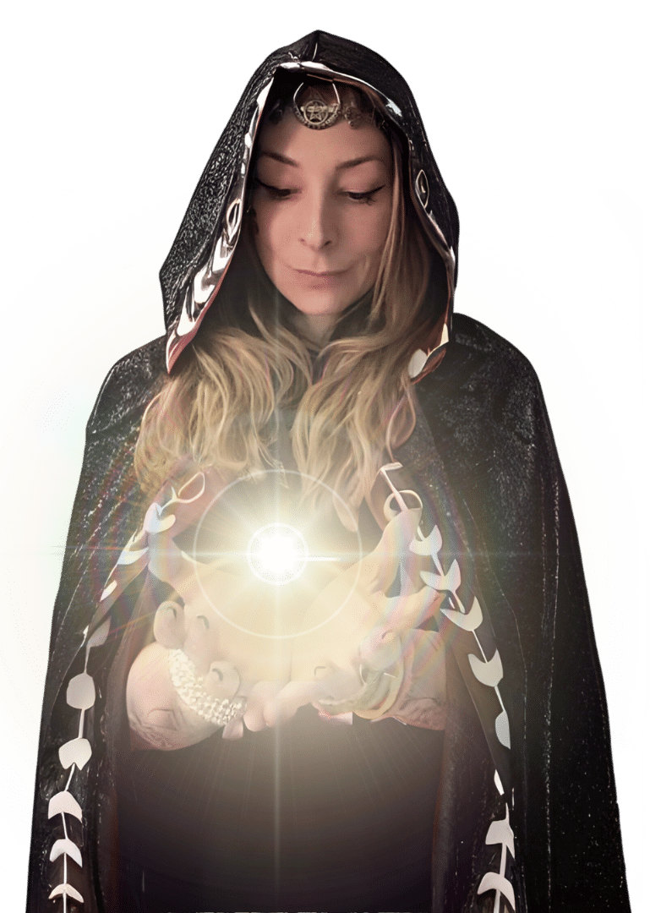
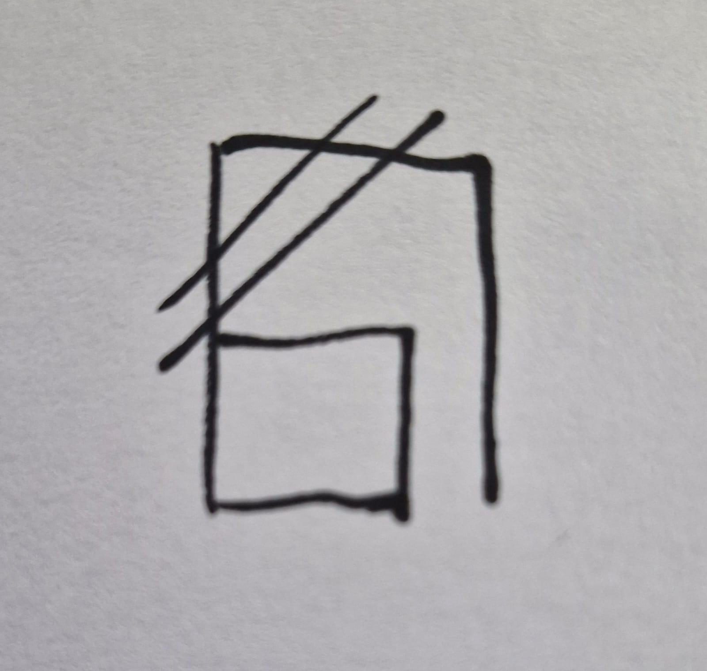

RITUAL COLETIVO
RITUAL DA
PRIMEIRA LUZ
Corte de karma e quebra de demanda
com a egrégora Excitatio Lux
9 E 10 DE NOVEMBRO · COM PRACY
ANTES DE TUDOUma carta pra você
Olá! Eu sou a Pracy, maga hermetista e adepta da Goétia. Dou aula de magia online e atendo há anos. Você me encontra em aprendamagia.com.br e no Instagram @magiacompracy.
O Ritual da Primeira Luz é um dos rituais mais poderosos que já usei para desbloquear caminhos e cortar bloqueios profundos.
A primeira vez que fiz esse ritual foi quando meu mestre da época me viu rodando em círculos, sem nada do que eu queria funcionar. Era tudo bloqueado: karmas do passado e energia estagnada que me prendia no lugar.
Minha loja de cosméticos tinha uns três pedidos por semana. Depois do ritual, passou para cinco a dez pedidos por dia.
Desde então refinei essa prática e vi o efeito se repetir comigo, com clientes e com alunos. É sempre a primeira prática que eu recomendo quando a vida está tão travada que não adianta fazer trabalho para empurrar pra frente: se você está ancorada no chão, primeiro precisa soltar a âncora.
Sabe quando você reza, faz simpatia, acende vela, faz feitiço… e nada chega? Muitas vezes o pedido não falhou: ele bate em algo que trava o seu caminho.
Esse ritual não serve para "atrair coisas". Ele remove o que impede essas coisas de chegarem até você. Depois dele, tudo o que você já faz volta a ter força.
PARA QUE SERVEO que o ritual corta
Travas financeirasDificuldade de fechar contratos, ser promovida, atrair clientes.
Padrões de escassezCiclos que sempre te levam ao mesmo fim nos negócios.
Padrões no amorRelações tóxicas, sensação de nunca ser notada.
Mediunidade bloqueadaDificuldade de se conectar com guias e entender mensagens.
Amarras e demandasAmarras energéticas e kármicas, ou magias enviadas contra você.
COMO VAI SEROs dois dias
Segunda 9/11 · 10h
Encontro ao vivo comigo. Eu explico como a magia funciona, por que o seu pedido não está chegando e como escrever o seu papel do jeito certo. O link chega pelo WhatsApp da Lil.ia.
Segunda 9/11 · durante o dia
Dia limpo: sem álcool, drogas, sexo ou grandes agitações. Escreva o seu papel com calma.
Segunda 9/11 · a partir da meia-noite
A vela. Eu abro a egrégora Excitatio Lux à meia-noite e, à 1h, faço o ritual com o nome de todos os participantes. Ela fica aberta até a manhã seguinte, então não precisa ser no minuto exato.
Terça 10/11 · nascer do sol
A consolidação na primeira luz do dia.
O QUE VOCÊ VAI PRECISARSepare antes
🕯️1 vela branca
comum, pode ser pequena
📄¼ de folha sulfite
dobre em quatro
🧵Barbante ou linha
de tecido, sem plástico
🖊️Caneta
preta ou azul
DIA 1 · SEGUNDA À NOITEO papel e a vela
1
No lado esquerdo do papel, escreva tudo o que você quer cortar: o padrão, a crença ou a trava que te limita. Seja específica.
"Medo de crescer e ocupar espaços de destaque."
2
No lado direito, escreva o que você quer ativar no lugar, sempre no presente."Confio plenamente no meu valor e ocupo meu lugar com força e leveza."
ESQUERDA
o que eu corto
DIREITA
o que eu ativo
3
Rasgue o papel ao meio. Enrole a parte da esquerda na vela e amarre com o barbante. Atrás da parte da direita, desenhe este sigilo:

Copie com calma, com atenção em cada traço. 4
A partir da meia-noite, acenda a vela com atenção. Observe a chama por alguns minutos e visualize o que você escreveu na esquerda sendo queimado, dissolvido, desfeito. Só observe, sinta e permita. Se o papel queimar junto, tudo bem. Se não queimar, também está certo: no dia seguinte, descarte no lixo comum.
5
Guarde a parte da direita debaixo do travesseiro e coloque o despertador para tocar 10 minutos antes do nascer do sol. Pesquise no Google "nascer do sol 10 de novembro" e o nome da sua cidade.
DIA 2 · TERÇA DE MANHÃA primeira luz
1
Quando acordar, vá para um lugar de onde você veja o céu clareando: janela, varanda ou quintal.
2
Leve o papel. Fique ali de 15 a 20 minutos, segurando o papel, olhando a luz do dia surgir e mentalizando com força o que você escreveu.
Não pense mais no que foi cortado. Agora você está ativando o novo.
3
Depois, coloque o papel num lugar visível (espelho, porta do armário) para lembrar todo dia da transformação que você ativou.
4
Quando sentir que isso se consolidou, guarde o papel com suas ferramentas mágickas ou num lugar sagrado. Ele vira um talismã.
A egrégora Excitatio Lux
Essa egrégora foi criada e é alimentada por mim. O nome vem do latim e significa Estímulo da Luz, quase um "faça-se a luz". Ela serve exatamente para rituais de corte, limpeza, quebra de padrões energéticos e renascimento espiritual.
DEPOIS DO RITUALO que você pode sentir
LevezaCansaçoLeve confusão mentalSonhos intensosEnjoo leveDor de cabeça
É tudo normal: você está mexendo em energia parada e cortando coisas muito antigas, o que pode trazer uma sensação momentânea de "vazio". Em 2 ou 3 dias tudo se organiza.
ANEXOComo escrever o pedido
A forma como você escreve é essencial. O pedido precisa ser específico e objetivo.
✗ "Quero desbloquear minha vida financeira."
✓ "Removo os bloqueios que me impedem de ser promovida no trabalho."
✗ "Quero melhorar minha espiritualidade."
✓ "Desbloqueio minha mediunidade e ouço e interpreto mensagens espirituais com clareza."
✗ "Quero encontrar um amor."
✓ "Destruo os padrões que me fazem atrair relações rasas e sem compromisso."
Te vejo segunda às 10h.
— Pracy
Dúvidas? Fala com a Lil.ia no WhatsApp.